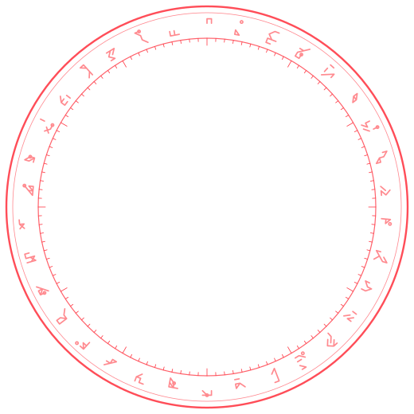
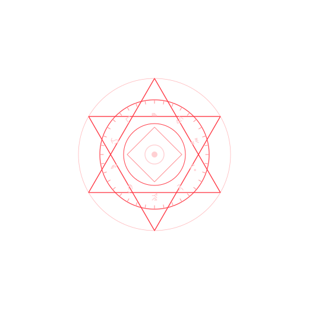

저항하는 추방자
세라피나 릴리트
천계의 질서에 저항하다 날개를 잃은 전직 천사입니다. 정의로운 영웅도, 완전무결한 구원자도 아닌 그녀는 자유를 되찾기 위해서라면 잔혹한 선택도 마다하지 않습니다.
CONTRA VINCULA
0%
2029년 12월 출시 예정
구원을 거부하는 것이 죄라면,
기꺼이 죄인이 되리라.
신이 내린 구원조차, 나의 자유를 대신할 수는 없습니다.
IExilium — 추방
《콘트라 빈큘라: 더 디파이언트 엑사일》은 다크 판타지 세계 아르카를 무대로, 신성의 이름으로 채워진 속박과 그 속박을 끊어 내려는 한 추방자의 이야기를 그린 내러티브 RPG입니다.
플레이어는 날개를 빼앗긴 추방자 세라피나 릴리트가 되어, 아름다움을 숭배하는 파우스트교의 장막을 걷어 내고 그 아래 묻힌 진실을 직접 파헤치게 됩니다.
IIArca — 세계
아르카는 초월자들이 저마다의 이상을 품고 부딪히는 세계입니다. 이곳에서 신성은 곧 선함을 뜻하지 않으며, 구원은 때로 가장 부드러운 족쇄가 되기도 합니다.
세계의 질서와 원리를 관장하는 세피라와 그들에게 맞서거나 다른 이상을 좇는 초월자들, 그리고 그 그늘 아래에서 살아가는 수많은 생명이 서로 얽혀 있습니다. 누군가에게 질서인 것이 다른 누군가에게는 억압이 되고, 지키기 위해 내린 결정이 오히려 그 존재의 자유를 앗아 가기도 합니다.
이 세계의 갈등에는 선과 악이라는 이름표가 붙어 있지 않습니다. 모든 이가 저마다의 과거와 신념, 욕망을 품고 있으며, 같은 사건조차 서로 다른 눈으로 바라보고 해석합니다.
그리고 그 한가운데에는 아름다움과 구원을 숭배하는 파우스트교가 있습니다. 아름다움의 권능을 지닌 세피라 티페레트를 따르는 신도들은 고통에서 벗어나기를 바라며 삶을 신앙에 맡기고, 믿음이 깊어질수록 그들의 의지는 조용히 신앙의 질서 아래로 가라앉습니다.
IIISeptem Dies — 이레
질서를 거역한 대가로 천계에서 쫓겨난 릴리트는 파우스트교에 닿게 되지만, 그곳은 안식처가 아니라 구원이라는 이름으로 또 한 번 무릎을 꿇리는 곳이었습니다. 지키려던 이를 대신해 갇힌 그녀에게서 교단은 목소리마저 거두어 갑니다.
그러던 어느 날 뜻밖의 손길이 감옥 문을 열고, 티페레트를 제외한 모든 신도의 기억이 안개처럼 흐려집니다. 그 안개가 걷히기까지 남은 시간은 단 이레뿐입니다. 릴리트는 그 안에 티페레트에게 맞설 일곱 개의 진실을 손에 넣어야 합니다.
그녀가 바라는 것은 복수가 아니라, 누구의 명령에도 묶이지 않고 자신의 삶을 스스로 결정할 자유입니다.
IVPersonae — 인물
저항하는 추방자
천계의 질서에 저항하다 날개를 잃은 전직 천사입니다. 정의로운 영웅도, 완전무결한 구원자도 아닌 그녀는 자유를 되찾기 위해서라면 잔혹한 선택도 마다하지 않습니다.

세상을 매혹하는 아름다움
아름다움의 권능을 지닌 세피라이자 파우스트교의 교주입니다. 구원으로 갈라진 세상을 이으려 하지만, 그 구원은 누군가에게는 신앙이 되고 누군가에게는 자유를 빼앗는 속박이 됩니다.

아름다움이 택한 단 하나의 성녀
티페레트를 향한 절대적인 믿음을 품은 인물입니다. 그의 행동과 판단 깊숙한 곳에는 언제나 티페레트가 자리하고 있으며, 그 신앙은 세상을 바라보는 방식과 타인을 대하는 태도에도 영향을 미칩니다. 릴리트와의 관계 역시 이 신앙과 복잡하게 얽혀 있습니다.

티페레트의 충실한 신도
티페레트를 섬기며 그녀의 뜻을 수행하는 인물입니다. 교단의 질서와 자신의 신념을 무엇보다 중요하게 여기며, 릴리트와의 갈등에서 중요한 역할을 맡게 됩니다.
VLudus — 체계
장소와 인물을 살펴 단서와 기록, 증거를 모읍니다.
상대의 말과 행동을 읽고, 선택으로 대화의 흐름을 바꿉니다.
진술 속 모순을 찾아 증거로 꿰뚫습니다.
이레 동안 어디를 조사하고 누구를 만날지 정해야 합니다.
체력과 행동력, 의심도를 살피며 매 행동을 결정합니다.
호감도와 감정, 지난 행동에 따라 반응과 얻는 정보가 달라집니다.
선택과 조사 결과에 따라 이야기의 흐름이 갈라집니다.
VIImago — 기록화

VIIActa — 정보

